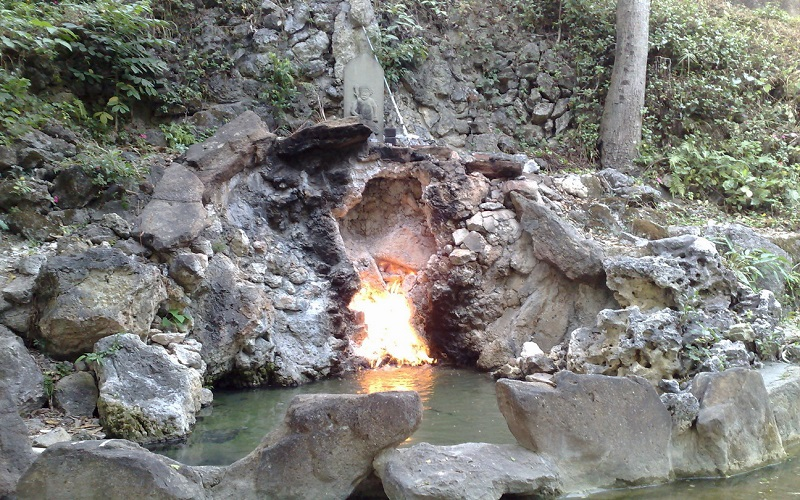
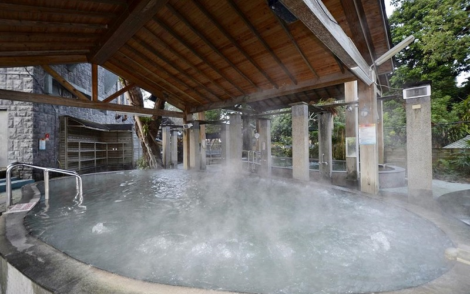

Guanziling
Tainan City
Fire and Water Spring
Fire and Water Spring has been here for about 300 years and it is the landmark at Guanziling.
Methane is emitted from the cliff gap, lighted up, and water flows from the cliff in the meantime, results in
the spectacle of the coexistance of fire and water. The Guanziling Hot Spring is a alkaline carbonated mud spring with
the spring water of 75 degree Celsuis. Containing the rare material radium, it is also called
"The Best Spiritual Spring in the world" and can benefit one's health and beauty.
- Best seasons: all year around
- Transportation:
The nearest train station is the Hsinying station. Public bus service to the area is available from #66 bus.